Grande Vitória, ES
Rolamento e roda de moto com entrega hoje na Grande Vitória
63 peças: rolamento de roda, de direção e aro. Entrega por motoboy no mesmo dia em Vitória, Vila Velha, Serra, Cariacica, Viana, para pedido até 12h. Pagamento no Pix. Troca grátis em 7 dias se não servir.
Escolha pela moto
CG 160CG 150CG 125BizPopBros 160Bros 150FactorCrosser 150XRE 300Fazer 250Lander e Ténéré 250Twister e CB 300PCX 150
Rolamento e roda de moto: peças em estoque


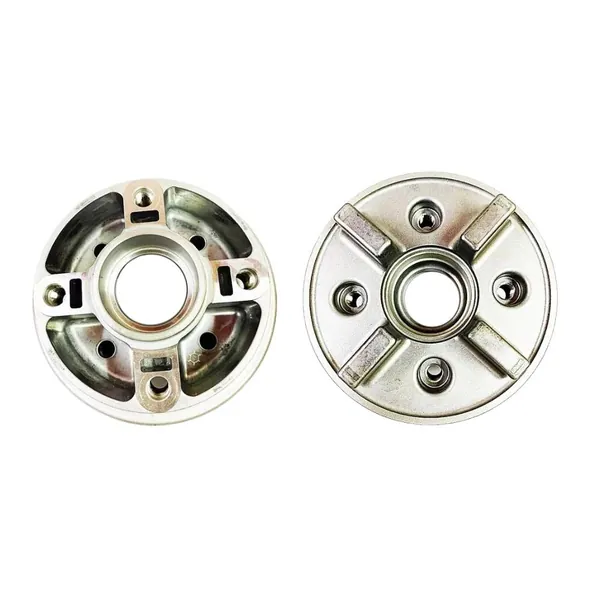
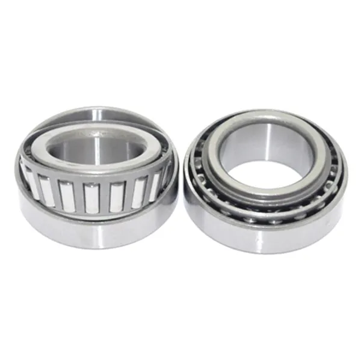

Flange traseiro CG 150 Titan 2004 a 2009 Cobreq
R$ 87,90no Pix
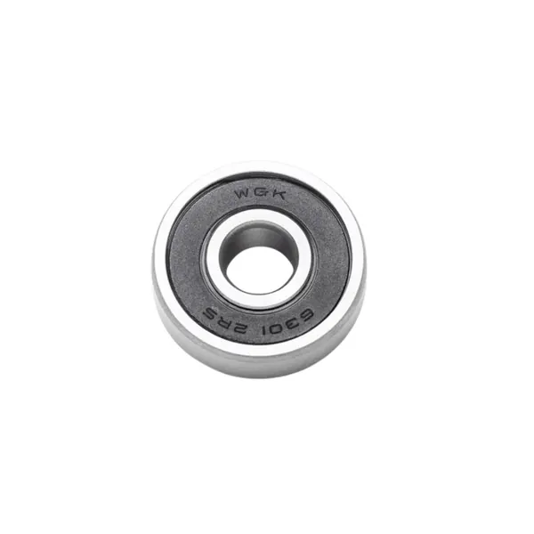

Cubo traseiro CG 150 Titan 2004 a 2009 Cobreq
R$ 148,90no Pix

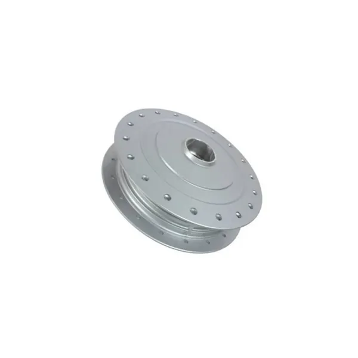
Cubo da roda dianteiro CG 150 Titan/Job 2004 a 2009 Diafrag
R$ 194,90no Pix

Cubo da embreagem CG 150 Fan/Titan, CG 125 Fan e outras WGK
R$ 49,90no Pix
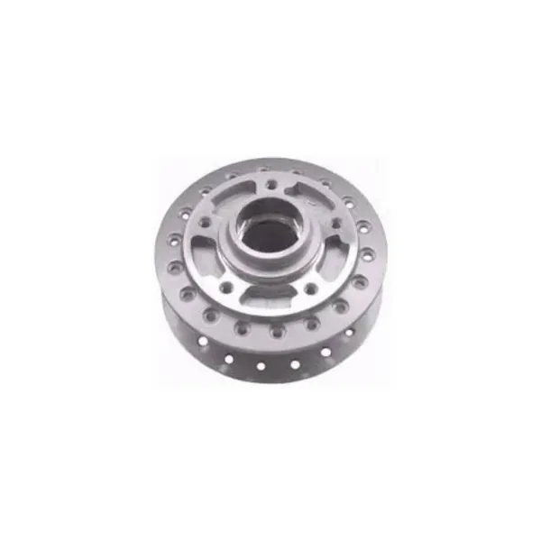


Eixo cavalete central CG 150 Titan 2004 em diante Danidrea
R$ 19,90no Pix


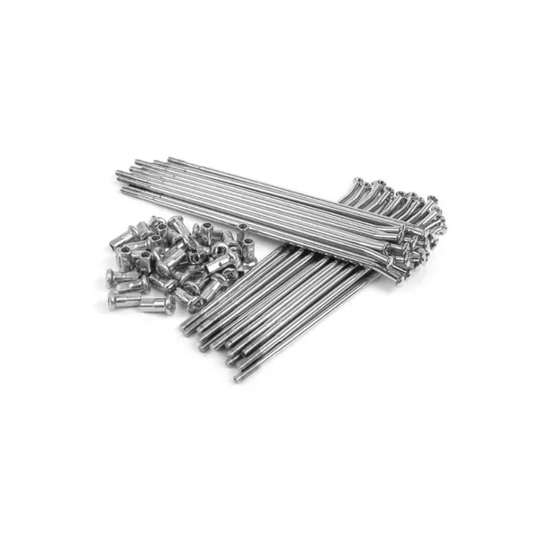

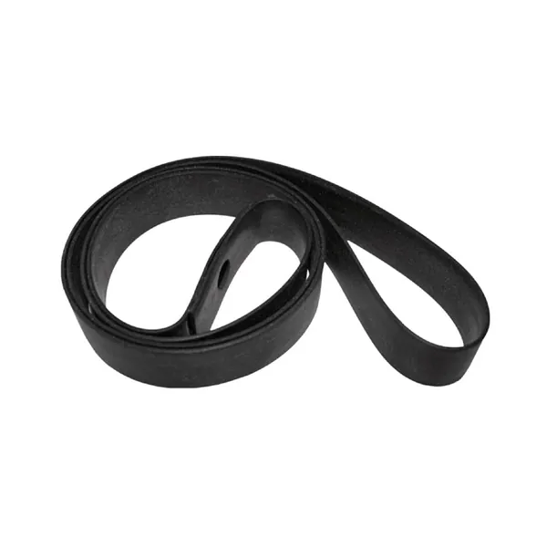
Cinta de borracha aro 18 CG 125 Fan/Cargo Vedamotors
R$ 9,90no Pix

Rolamento linha 6000 CG 125 ML, DT 180 e outras FAG
R$ 22,90no Pix

Rolamento linha 6000 CG 125 Fan/Titan, Bros 125 e outras SKF
R$ 16,90no Pix

Cubo da roda traseira CG 125 Fan/Cargo 2009 a 2012 Diafrag
R$ 218,90no Pix


Cubo de embreagem CG 125 Fan/Titan, Bros 125 e outras WGK
R$ 48,90no Pix

Cubo da roda traseiro CG 125 Fan/Titan Diafrag
R$ 195,90no Pix

Cubo traseiro CG 125 Fan 2009 a 2016 Cobreq
R$ 223,90no Pix

Rolamento de roda 62032RS Biz 125, Biz 100 e outras WGK
R$ 11,90no Pix

Cubo da roda dianteiro Biz 125 e Biz 100 Diafrag
R$ 164,90no Pix

Cubo da roda traseiro Biz 125, Biz 110i e outras Diafrag
R$ 159,90no Pix
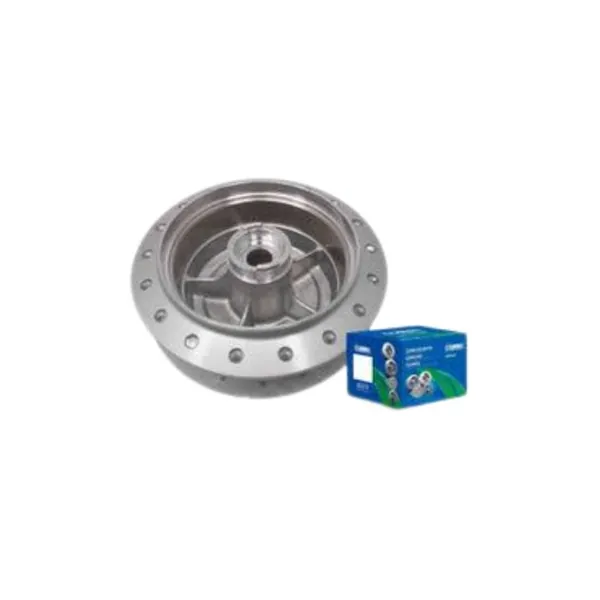
Cubo da roda dianteiro Biz 125 2008 a 2010 Diafrag
R$ 181,90no Pix
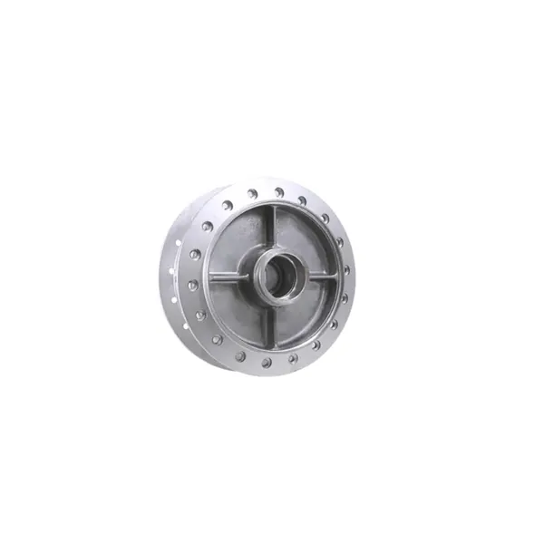
Cubo traseiro Biz 125, Biz 110i e outras Cobreq
R$ 150,90no Pix


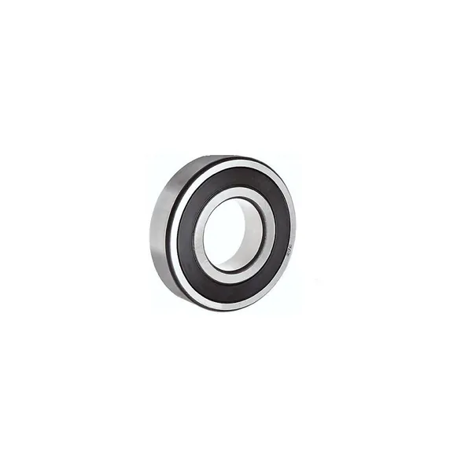
Rolamento linha 6000 Biz 110i, Pop 110i e outras FAG
R$ 19,90no Pix
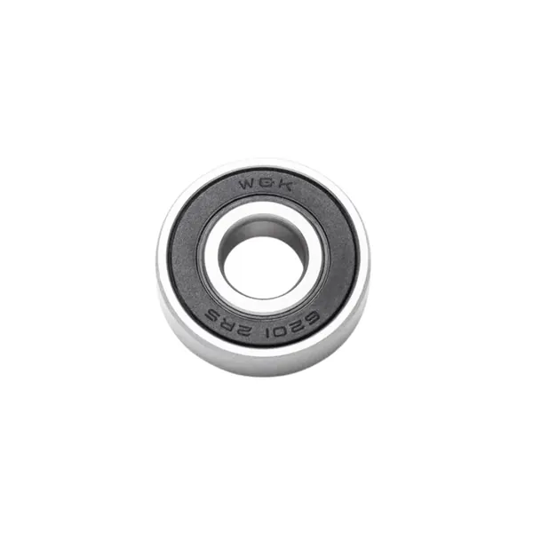
Rolamento de roda 62012RS Biz 100, Pop 100 e outras WGK
R$ 9,90no Pix


Rolamento de roda 63032RS Bros 150, Bros 125 e outras WGK
R$ 18,90no Pix
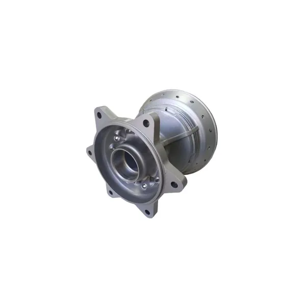
Cubo da roda traseiro Bros 150 e Bros 125 Diafrag
R$ 224,90no Pix

Raio dianteiro com niple 4MM Bros 150 e Bros 125 Controlflex
R$ 47,90no Pix

Rolamento linha 6000 Factor 125, YBR 125 e outras FAG
R$ 22,90no Pix
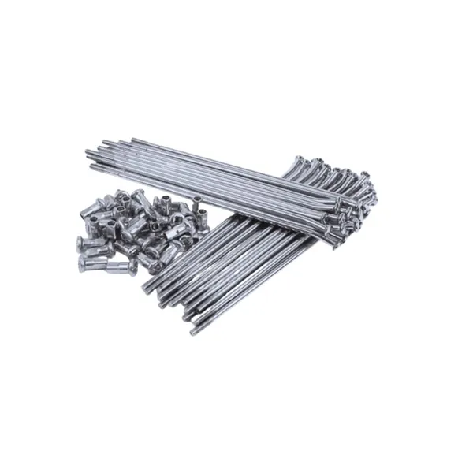


Rolamento de roda 62042RS XRE 300, Twister 250 e outras WGK
R$ 14,90no Pix

Rolamento linha 6000 XRE 300, Twister 250 e outras FAG
R$ 25,90no Pix


Rolamento linha 6000 Fazer 250, RD 350 e outras SKF
R$ 28,90no Pix

Eixo completo Fazer 250 2018 em diante Danidrea
R$ 84,90no Pix

Rolamento de roda 62052RS PCX 150, SH 150i e outras WGK
R$ 19,90no Pix

Rolamento linha 6000 XR 250R, Tornado 250 e outras FAG
R$ 30,90no Pix

Cubo da roda dianteiro YBR 125 2000 a 2008 Diafrag
R$ 168,90no Pix
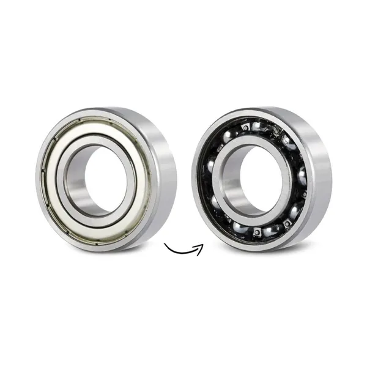
Rolamento blindagem aço 1L XTZ 125, DT 180 e outras FAG
R$ 25,90no Pix

Eixo com porca XTZ 125 2002 a 2016 Danidrea
R$ 23,90no Pix
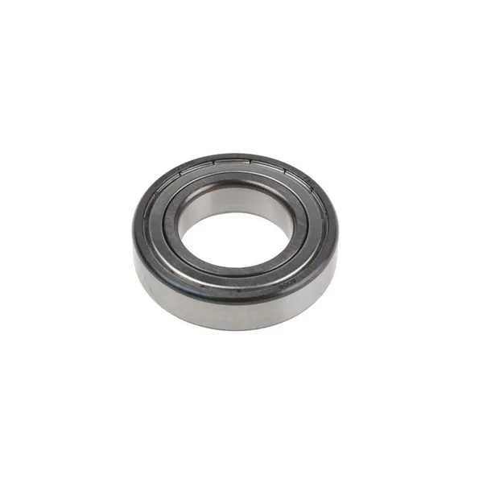
Rolamento linha 6000 Lead 110 e Sundown Future 125 FAG
R$ 16,90no Pix


Não achou a peça?
Mande o modelo e o ano da moto no WhatsApp (27) 92000-6463. A gente confere na distribuidora e responde com o preço.